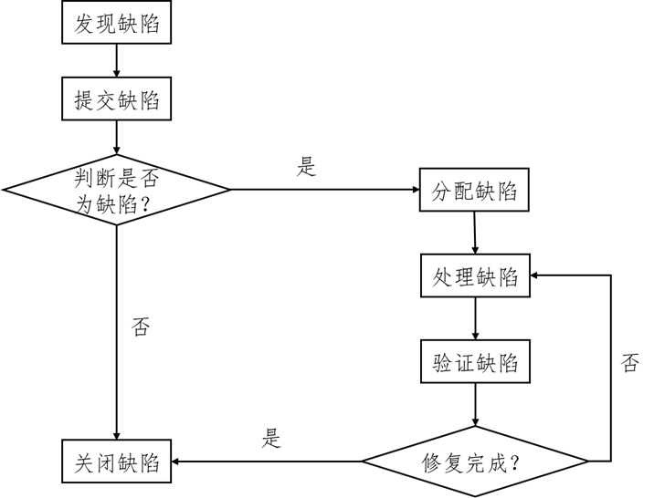

软件缺陷
[TOC]
定义
术语：
软件错误
指在软件生存期内的不希望或不可接受的人为错误，其结果是导致软件缺陷的产生。软件错误是一种人为过程，相对于软件本身是一种外部行为。
软件缺陷
存在于软件之中的那些不希望或不可接受的偏差，结果是软件运行于某一特定条件时出现软件故障，这时称软件缺陷被激活。
软件故障
指软件运行过程中出现的一种不希望或不可接受的内部状态。若没有适当的措施加以处理，便产生软件失效，软件故障是一种动态行为。
软件失效
指软件运行时产生的一种不希望或不可接受的外部行为结果。
软件失效的机理：
软件错误是一种人为错误，一个软件错误必定产生一个或多个软件缺陷，当一个软件缺陷被激活时便产生一个软件故障；同一个软件缺陷在不同条件下被激活可能产生不同的软件故障。软件故障如果没有及时用容错措施加以处理便不可避免地导致软件失效。
软件缺陷的属性
缺陷标识（Identifier）：标记某个缺陷的一组符号，每个缺陷必须有一个唯一的标识。
缺陷类型（Type）：一般包括功能缺陷、用户界面缺陷、文档缺陷、软件配置缺陷、性能缺陷、系统/模块接口缺陷等。
| 缺陷类型编号 | 缺陷类型 | 描述 |
| :—————: | :—————————-: | :—————————————————————————————: |
| 10 | F-Function | 影响重要的特性、用户界面、产品接口、硬件结构接口和全局数据结构，并且设计文档需要正式的变更等缺陷 |
| 20 | A-Assignment | 需要修改少量代码，如初始化或控制块，声明、重复命名，范围、限定等缺陷 |
| 30 | I-Interface | 与其他组件、模块或设备驱动程序、调用参数、控制块或参数列表相互影响的缺陷 |
| 40 | C-Checking | 提示的错误信息，不适当的数据验证等缺陷 |
| 50 | B Build/package/merge | 由于配置库、变更管理或版本控制引起的错误 |
| 60 | D-Documentation | 影响发布和维护，包括注释 |
| 70 | G-Algorithm | 算法错误 |
| 80 | U-User Interface | 人机交互特性：屏幕格式、确认用户输入、功能有效性、页面排版等缺陷 |
| 90 | P-Performance | 不满足系统可测量的属性值，如执行时间、事务处理速率等 |
| 100 | N-Norms | 不符合各种标准的要求，如编码标准、设计符号等 |缺陷严重程度（Severity）：指因缺陷引起的故障对软件产品的影响程度。
| # | 缺陷严重等级 | 描述 |
| :—: | :—————: | :—————————————————————————————: |
| 1 | Critical | 不能执行正常工作功能或重要功能，或者危及人身安全 |
| 2 | Major | 严重影响系统要求或基本功能的实现，且无法更正 |
| 3 | Minor | 严重影响系统要求或基本功能的实现，但存在合理的更正方法（重新安装或重新启动该软件不属于更正方法） |
| 4 | Cosmetic | 使操作者不方便或遇到麻烦，但它不影响执行工作功能或重要功能 |
| 5 | Other | 其他错误 |缺陷优先级（Priority）：指缺陷必须被修复的紧急程度。
| # | 缺陷优先级 | 描述 |
| :—: | :————————-: | :————————: |
| 1 | Resolve Immediately | 必须立即解决 |
| 2 | Normal Queue | 需要排队等待修复 |
| 3 | Not Urgent | 可以在方便时被纠正 |缺陷状态（Status）：指缺陷通过一个跟踪修复过程的进展情况。
| 缺陷状态 | 描述 |
| :———-: | :—————————————: |
| Submitted | 已提交的缺陷 |
| Open | 确认“提交的缺陷”，等待处理 |
| Rejected | 拒绝“提交的缺陷”，不需要修复 |
| Resolved | 缺陷被修复 |
| Closed | 确认被修复的缺陷，将其关闭 |缺陷起源（Origin）：指缺陷引起的故障第一次被检测到的阶段。
| 缺陷起源 | 描述 |
| :—————: | :—————————: |
| Requirement | 在需求阶段发现的缺陷 |
| Architecture | 在构架阶段发现的缺陷 |
| Design | 在设计阶段发现的缺陷 |
| Code | 在编码阶段发现的缺陷 |
| Test | 在测试阶段发现的缺陷 |缺陷来源（Source）：指引起缺陷的起因。
| 缺陷来源 | 描述 |
| :—————: | :——————————: |
| Requirement | 由于需求问题引起的缺陷 |
| Architecture | 由于构架问题引起的缺陷 |
| Design | 由于设计问题引起的缺陷 |
| Code | 由于编码问题引起的缺陷 |
| Test | 由于测试问题引起的缺陷 |
| Integration | 由于集成问题引起的缺陷 |缺陷根源（Root Cause）：指发生错误的根本因素。
缺陷六要素
- 缺陷标识
- 缺陷名称
- 缺陷优先级
- 缺陷严重程度
- 缺陷的复现步骤：用例的步骤、预期结果、实际结果。
- 附件：截图/日志/视频，目的是为缺陷佐证。
缺陷生命周期
基本的软件缺陷生命周期：
发现缺陷$\rightarrow$分配缺陷$\rightarrow$修复缺陷$\rightarrow$验证缺陷$\rightarrow$解决缺陷
软件的状态在其生命周期中的变化如下：
（1）创建（Open）：缺陷从隐藏在产品中被发现。
（2）已分配（Assigned）：得到缺陷修复请求后，将修复任务分配给相应的开发人员进行修复。
（3）已修复（Fixed）：开发人员根据缺陷的描述重现缺陷的症状、修复缺陷，然后提交给测试人员验证修改。
（4）验证（Validate）：测试人员验证修改的有效性，若修正得到确认，缺陷状态变为“已确认”。
（5）关闭（Close）：测试人员关闭这个缺陷，结束其生命周期。
实践中的软件缺陷生命周期：

IEEE 软件缺陷报告模板
1 | IEEE 829-1998 软件测试文档编制标准软件缺陷报告模板 |
参考资料：
[1] 秦航，杨强 . 软件质量保证与测试(第 2 版)[M] . 北京：清华大学出版社，2017